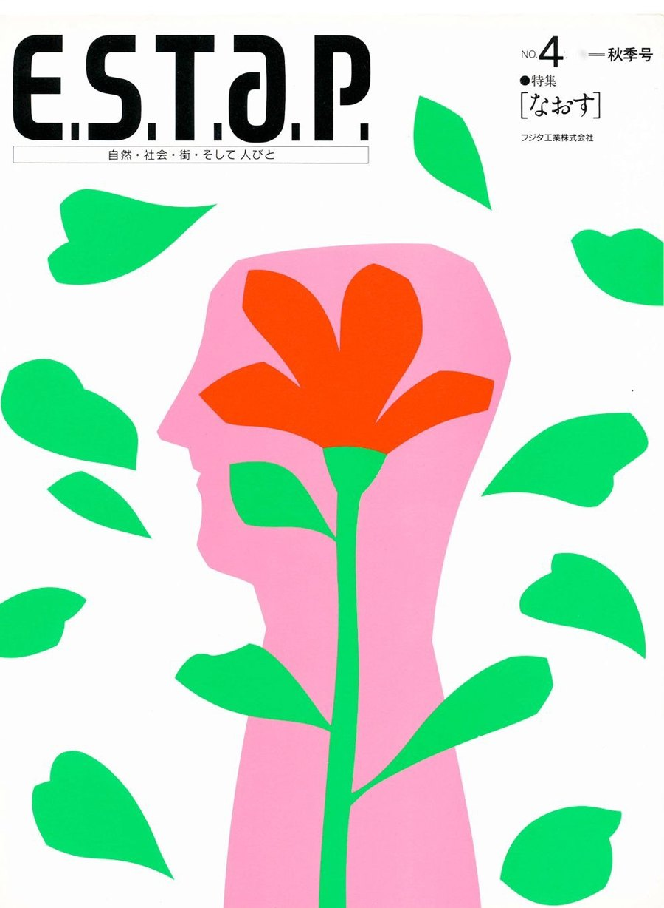
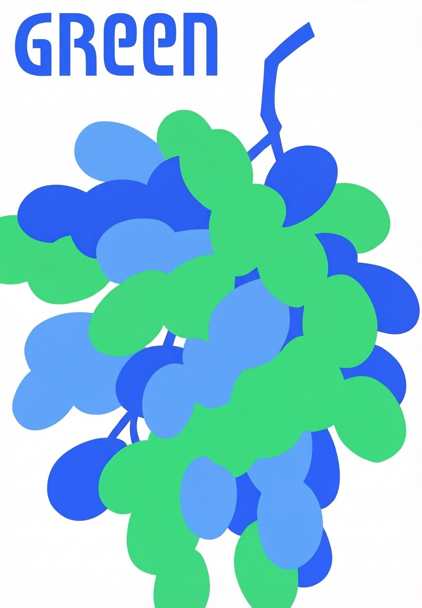
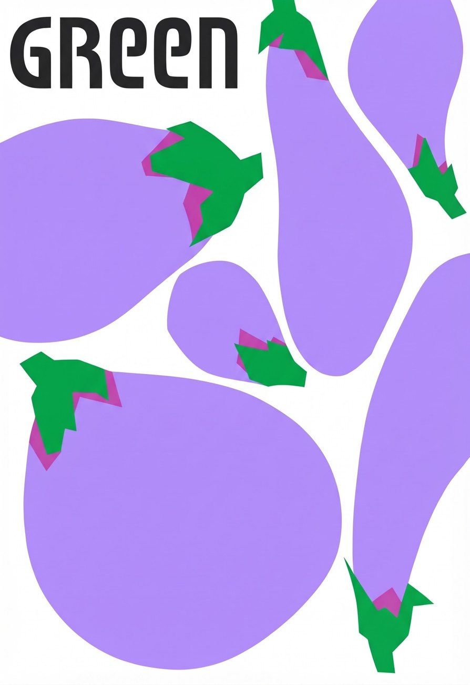
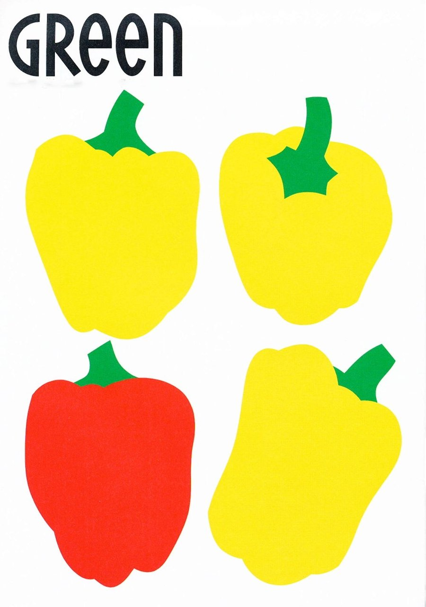
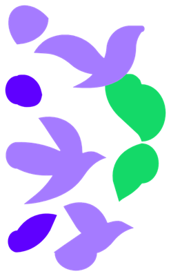
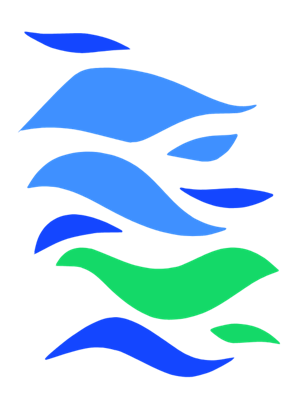

THE DESIGNER
“zenji
funabashi”
舟橋全二 · 1942–2023
Japanese illustrator and graphic designer. He cut flat shapes out of paper in bright, happy colours, and turned flowers, birds and fruit into signs.
HIS WORK




WHEN AND WHERE
1942Born in “Kanagawa”, “Japan”
1965Graduates in graphic design from “Tama Art University”, “Tokyo”
1968Wins a prize at the “Nippon Design” exhibition with a silkscreen print
1970Moves to “Toronto”: design studios, woodwork and silkscreen
1977“San Francisco”: cut-paper animation for “Sesame Street”
1980Back in “Tokyo”: freelance illustration, murals, reliefs and spaces; teaches illustration for 23 years
2023Dies in December, at 80
The year you're on grows, like NOW in the app.
WHAT PASSED INTO “SORA”
Cut paper
Flat shapes with clean edges. No gradients, no shadows, no outlines.

His colour
A few bright, happy colours, always with one green.

Nature as signs
A flower, suns, birds and waves tell the weather.

Paper that moves
From his animation work: the pieces fly in and land.

Sources: “Wikipedia” (Japanese) · “Illustration Aoyama Juku”. Covers: works by “Zenji Funabashi”, from my research.